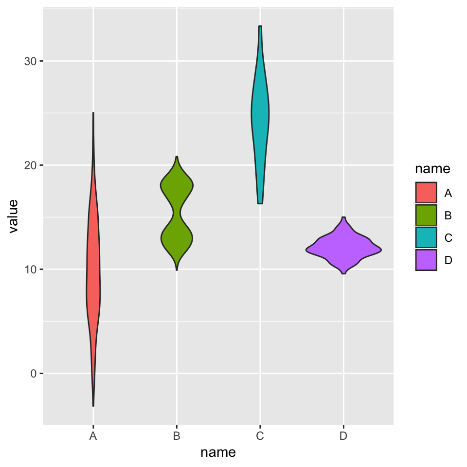
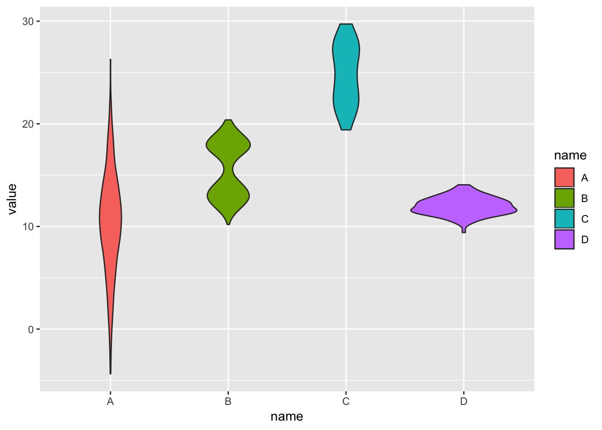
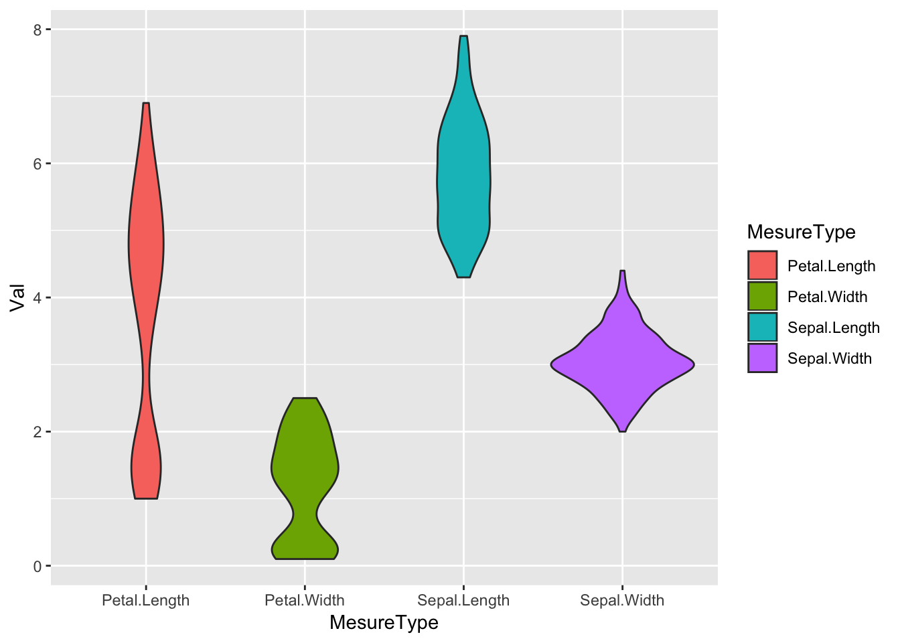

Basic violin plot
Building a violin plot with
ggplot2 is pretty straightforward thanks to the
dedicated geom_violin() function.
# Library
library(ggplot2)
# create a dataset
data <- data.frame(
name=c( rep("A",500), rep("B",500), rep("B",500), rep("C",20), rep('D', 100) ),
value=c( rnorm(500, 10, 5), rnorm(500, 13, 1), rnorm(500, 18, 1), rnorm(20, 25, 4), rnorm(100, 12, 1) )
)
# Most basic violin chart
p <- ggplot(data, aes(x=name, y=value, fill=name)) + # fill=name allow to automatically dedicate a color for each group
geom_violin()
#p
Note on input format
Ggplot2 expects input data to be in a long format: each row
is dedicated to one observation. Your input needs 2
column:
- a categorical variable for the X axis: it needs to be have
the class factor
- a numeric variable for the Y axis: it needs to have the
class numeric
→ From long format
You already have the good format. It’s going to be a breeze to
plot it with geom_violin() as follow:
# Library
library(ggplot2)
library(dplyr)
# Create data
data <- data.frame(
name=c( rep("A",500), rep("B",500), rep("B",500), rep("C",20), rep('D', 100) ),
value=c( rnorm(500, 10, 5), rnorm(500, 13, 1), rnorm(500, 18, 1), rnorm(20, 25, 4), rnorm(100, 12, 1) ) %>% round(2)
)| name | value |
|---|---|
| A | 11.02 |
| A | 5.54 |
| A | 18.05 |
| A | 6.57 |

→ From wide format
In this case we need to reformat the input. This is possible
thanks to the gather() function of the
tidyr library that is part of the
tidyverse.
| Sepal.Length | Sepal.Width | Petal.Length | Petal.Width |
|---|---|---|---|
| 5.1 | 3.5 | 1.4 | 0.2 |
| 4.9 | 3.0 | 1.4 | 0.2 |
| 4.7 | 3.2 | 1.3 | 0.2 |
| 4.6 | 3.1 | 1.5 | 0.2 |
library(tidyr)
library(ggplot2)
library(dplyr)
data_wide %>%
gather(key="MesureType", value="Val") %>%
ggplot( aes(x=MesureType, y=Val, fill=MesureType)) +
geom_violin()
Related chart types